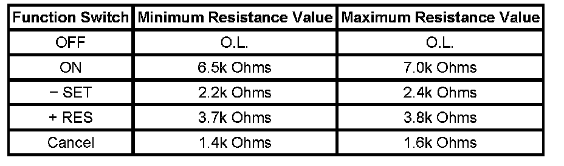

Cruise Control Inoperative/Malfunctioning
CRUISE CONTROL INOPERATIVE/MALFUNCTIONING
DIAGNOSTIC FAULT INFORMATION
Perform the Diagnostic System Check - Vehicle prior to using this diagnostic procedure. Initial Inspection and Diagnostic Overview
CIRCUIT/SYSTEM DESCRIPTION
The cruise control switch is an input to the body control module (BCM). The BCM monitors the cruise control on/off, set/coast, resume/accelerate, and cancel switch signal circuits in order to detect when a cruise control function switch has been activated. The BCM detects a predetermined voltage signal when a cruise control function switch is applied, with each switch having a different voltage value.
Conditions for Enabling Cruise Control
- The vehicle speed is greater than 40 km/h (25 mph).
- The vehicle is not in PARK, REVERSE, NEUTRAL, or 1st gear.
- The system voltage is within 9-16 volts.
- The park brake or brakes is not applied.
CIRCUIT/SYSTEM VERIFICATION
- Ensure that the following cruise control switches are not stuck in the engaged position:
- ON/OFF switch
- - Set switch
- + RES switch
- Cancel switch
- Inspect for proper operation of the stop lamps.
- Rotate the steering wheel to both steering stops while activating each cruise control switch separately. With a scan tool, observe the Cruise Control Switch parameters in the BCM. Ensure that each cruise control switch activated and that each displayed switch position in the Cruise Control Switch parameter match as the steering wheel is turned. This will help eliminate the possibility of an internally open or shorted inflatable restraint steering wheel module coil.
CIRCUIT/SYSTEM TESTING
CAUTION: Refer to SIR Caution.
Disable the inflatable restraint steering wheel module when performing this diagnostic.
1. Ignition OFF, remove the inflatable restraint steering wheel module.
2. Disconnect the harness connector of the cruise control switch.
3. Ignition ON, measure for 10 volts or greater at the cruise control supply voltage circuit.
- If less than 10 volts, check for an open/high resistance or for a short to ground on the cruise control supply voltage circuit.
4. Ignition OFF, test for an open, for a high resistance, for a short to ground, or for a short to voltage in the cruise control switch signal circuit.
5. Test the component. If the circuits and the component tests are normal, replace the BCM.
COMPONENT TESTING
CAUTION: Refer to SIR Caution.
Disable the inflatable restraint steering wheel module when performing this diagnostic.
IMPORTANT: The cruise control ON/OFF switch must be ON in order to properly measure the resistance of the - SET, the + RES, and the Cancel switches.
1. With the ignition OFF, remove the inflatable restraint steering wheel module.
2. With the ignition OFF, disconnect C277 at the inflatable restraint steering wheel module coil.

3. Measure the resistance between terminals 1 and 3 at the cruise control switch side of the connector. Individually activate and hold each cruise control function switch and compare the resistance reading to the values on the schematic for the ON/OFF, - SET, the + RES, and the Cancel switches.
- If any of the resistance measurements for the OFF, ON, - SET, + RES, and Cancel switches are not within the listed resistance values, replace the cruise control switch assembly.
REPAIR INSTRUCTIONS
Perform the Diagnostic Repair Verification after completing the diagnostic procedure.
- Steering Wheel Control Switch Assembly Replacement
- Control Module References for BCM replacement, setup, and programming. Programming and Relearning Verification Tests